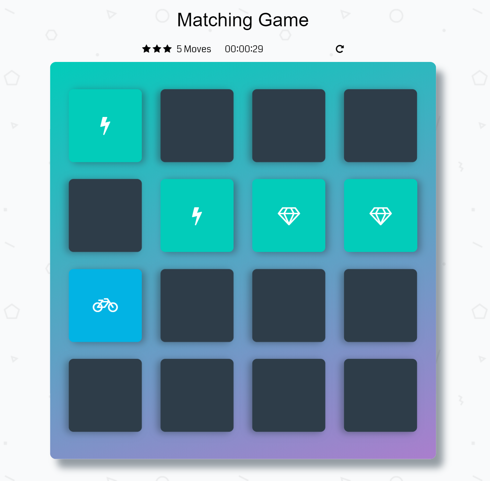

Return To Projects Page
Using HTML, CSS, and JavaScript, this two-page application challenges the player to find all matching pairs of cards in the fewest moves. To try the game, click here. To learn more about its structure, design, and how to download, see below. For full documentation, see this GitHub page (most of the below additional information is available in the README.md file at that page). Note: This project is based on a skeleton structure from Udacity. For more information, see the initial commit on the appropriate GitHub page given above.
Structure
Structure
Design
Design


Running The Application
Running The Application